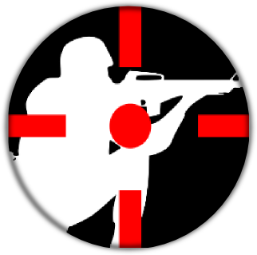

Ultimate Crosshair
- Tj Gienger -
cross top
cross right
cross bottom
cross left
center dot
outer circle
Match All
Cross
Circle
Dot
dot radius:
{{center_dot.radius}}
radius:
{{outer_circle.radius}}
thickness:
{{outer_circle.strokeWidth}}
length:
{{cross.bar.length}}
spread:
{{cross.bar.fromCenter}}
Thickness:
{{cross.bar.thickness}}
spin
rotate
save
close menu
quit
{{message}}